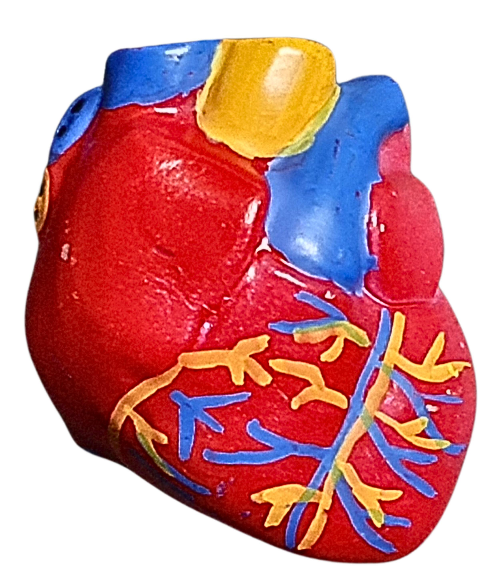

- The heart situated within the thoracic cavity
- Comprising of 4 chambers, namely 2 atria and 2 ventricles
- The coronary arteries and coronary veins supply blood to nourish the heart.
- Valves are present between the atria and ventricles, and between the ventricles and arteries, ensuring unidirectional blood flow.
- Pumps blood through the blood vessels of the circulatory system, carries oxygen and nutrients to the body.